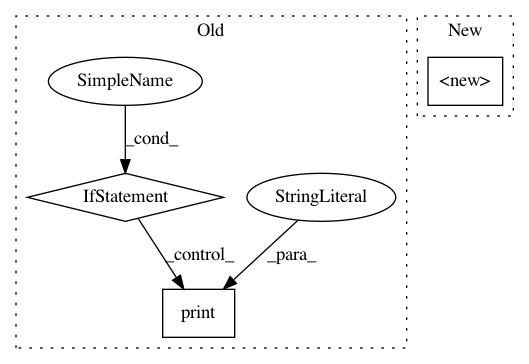

0cfe82c6beb9a28a5ff7da81b86fa0e93c388f14,tasks/save_reload_model.py,,,#,10
Before Change
model = Model(inputs=[i], outputs=[x])
if os.path.exists("tcn.npz"):
// Load checkpoint if file exists.
w = np.load("tcn.npz", allow_pickle=True)["w"]
print("Model reloaded.")
model.set_weights(w.tolist())
else:
// Save the checkpoint.
w = np.array(model.get_weights())
np.savez_compressed(file="tcn.npz", w=w, allow_pickle=True)
print("First time.")
// Make inference.
// The value for [First time] and [Model reloaded] should be the same. Run the script twice!
inputs = np.ones(shape=(1, 100))
out1 = model.predict(inputs)[0, 0]
print("*" * 80)
print(out1)
After Change
// load model from file
loaded_json = open(r"model.json", "r").read()
reloaded_model = model_from_json(loaded_json, custom_objects={"TCN": TCN})
// restore weights
reloaded_model.load_weights(r"weights.h5")
In pattern: SUPERPATTERN
Frequency: 3
Non-data size: 3
Instances
Project Name: philipperemy/keras-tcn
Commit Name: 0cfe82c6beb9a28a5ff7da81b86fa0e93c388f14
Time: 2019-11-20
Author: premy@cogent.co.jp
File Name: tasks/save_reload_model.py
Class Name:
Method Name:
Project Name: caserec/CaseRecommender
Commit Name: cf1f601ab89d89ec72ba009140470d4689553db1
Time: 2018-02-16
Author: fortes.arthur@gmail.com
File Name: caserec/recommenders/rating_prediction/user_attribute_knn.py
Class Name: UserAttributeKNN
Method Name: __init__
Project Name: neuropsychology/NeuroKit.py
Commit Name: cec653d36c15c9ffc078df0201d30c3ac3a5115b
Time: 2017-05-18
Author: dom.mak19@gmail.com
File Name: neurokit/bio/bio_ecg.py
Class Name:
Method Name: ecg_process